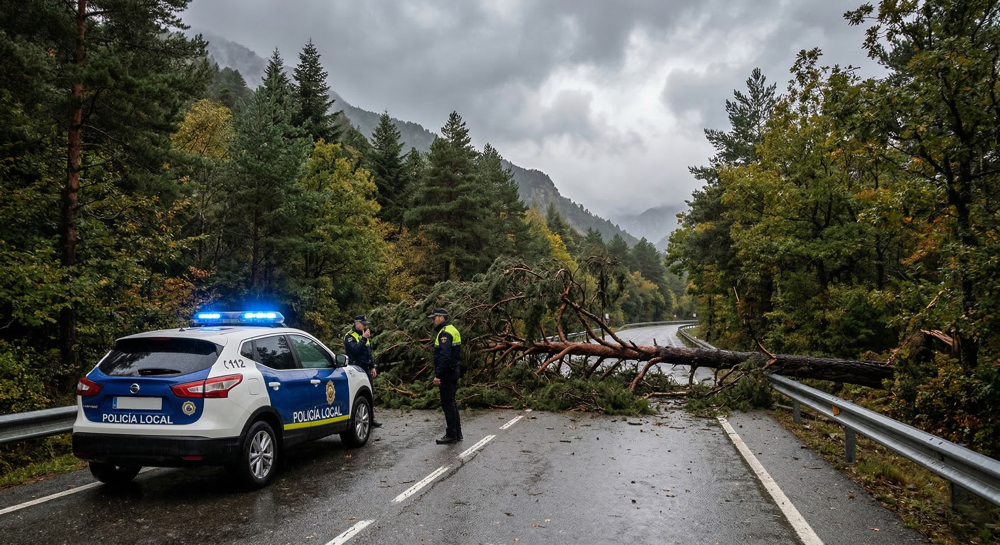
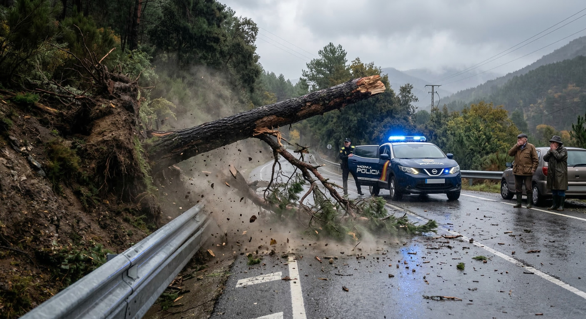

Corte de tráfico temporal por la caída de un pino
El Ayuntamiento de Cazorla informa a todos los vecinos y visitantes que la carretera A-319, en el tramo de subida hacia el Empalme del Valle, permanecerá cortada al tráfico durante la mañana de hoy debido a la caída de un pino de grandes dimensiones sobre la calzada, provocada por las fuertes rachas de viento de la pasada madrugada.
Afortunadamente, no hay que lamentar daños personales ni materiales de gravedad en los vehículos que transitaban la zona. Efectivos de la Policía Local, junto con los servicios de mantenimiento del Parque Natural y los Bomberos, ya se encuentran en el lugar trabajando en las labores de troceado y retirada del tronco.
Se recomienda a los conductores que necesiten acceder a la sierra que utilicen rutas alternativas y extremen la precaución, ya que la alerta amarilla por fuertes vientos seguirá activa hasta las 18:00 horas. Informaremos de la reapertura de la vía a través de nuestros canales oficiales y redes sociales en cuanto los operarios finalicen las tareas de limpieza.

